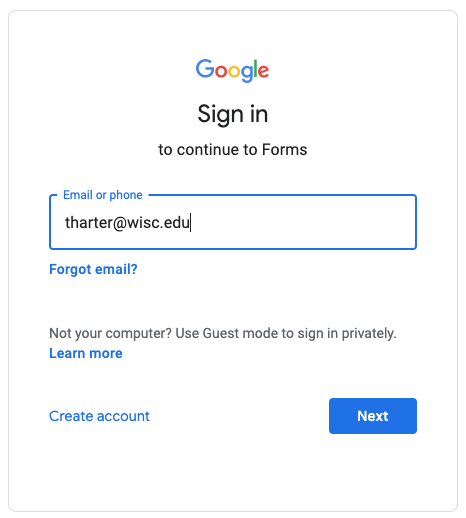

For non-anonymous forms, we will often require you to fill in this form using your "@wisc.edu" signin; this allows us to verify who you are. If you try using a different signin on one of these, you'll see an error saying "You need permission: This form can only be viewed by users in the owner's organization." If Google automatically signs in for you, please open the link in a "New Incognito Window" in Chrome.
1. Who are you? To help us better understand who is taking this class, please fill this out.
2. Lecture Misses. Promptly fill this if there was a good reason you weren't able to attend in person and participate via TopHat. If you find yourself filling this more than 7-8 times during the semester, please meet with your instructor to discuss the situation.
3. Feedback Form. If you have any issues with the class or suggestions for improvement, please let us know sooner rather than later.
4. Thank You! Has a TA provided exceptional help, during office hours, piazza, etc? Thank them by filling out this form, and I'll pass along the feedback.
For forms requiring authentication, make sure you sign in with your @wisc.edu, like this:
